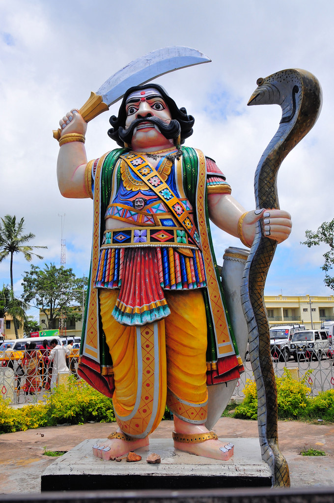
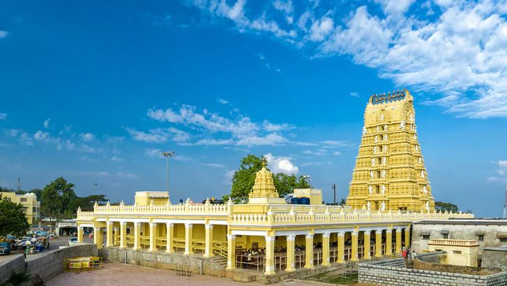
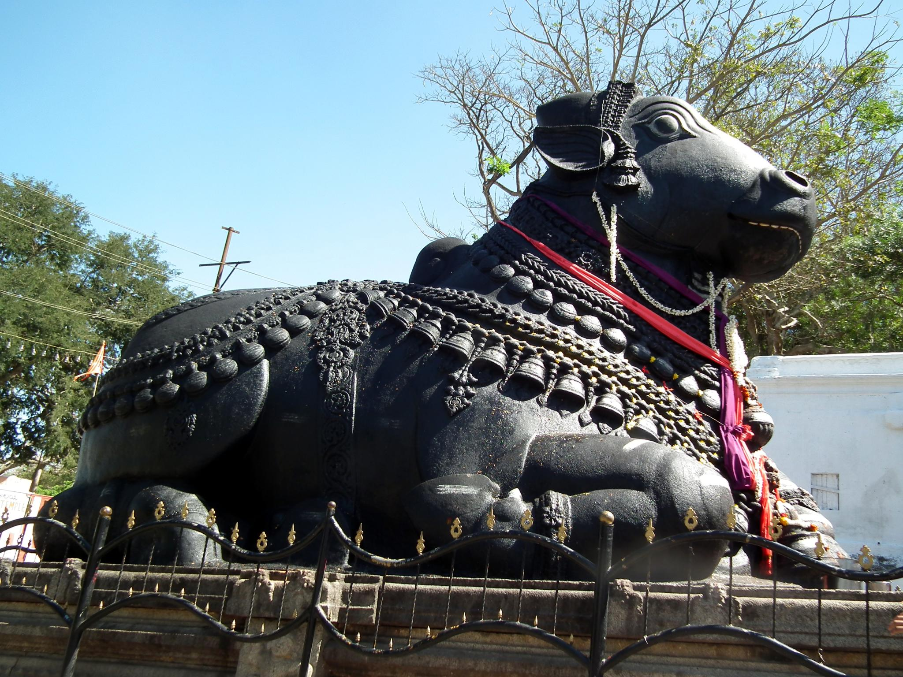

The colorful, iconic statue of the demon king Mahishasura holding a sword and a cobra. The city of Mysuru derives its name from Mahishasuru (the city of Mahishasura).

An ancient temple dedicated to the Goddess Chamundeshwari, featuring a massive, intricately carved seven-story Gopuram.

A colossal monolithic statue of Nandi (the sacred bull), standing 15 feet high and 24 feet long, carved from a single boulder.